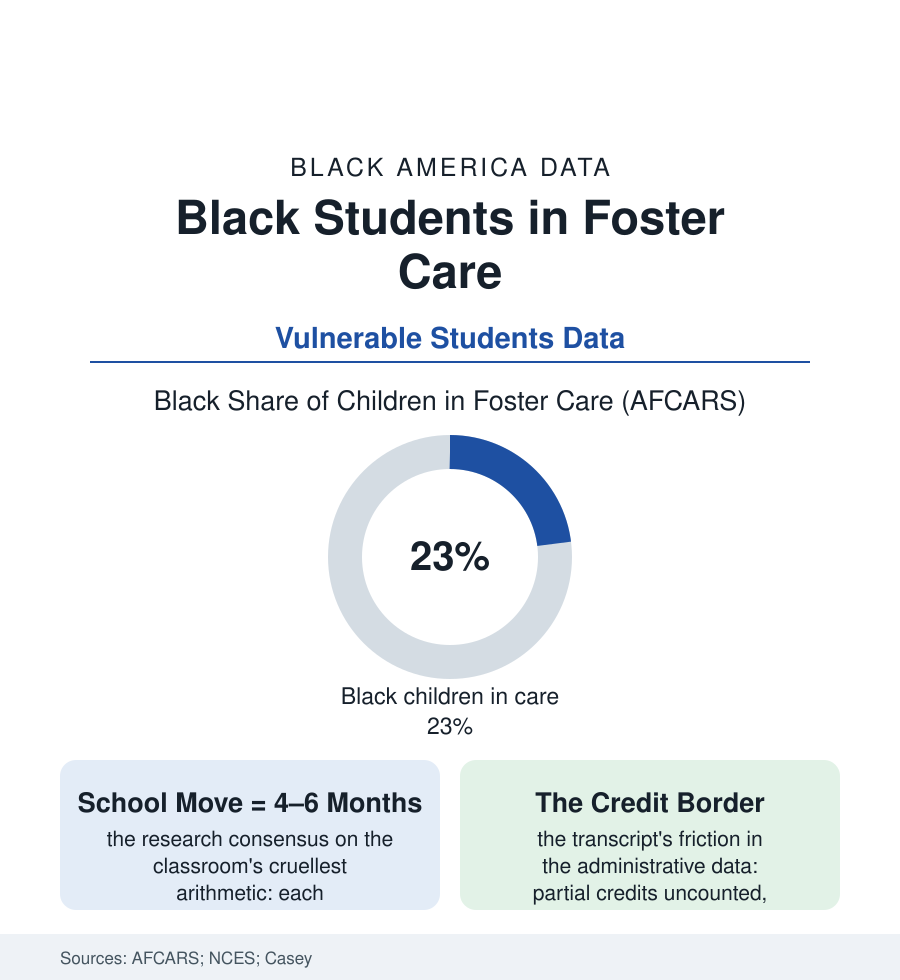

Black Education
The Backpack File: Black Students in Foster Care
A foster child's school record reads like a travel diary — a new school with every placement, credits lost at every border. Black children are a quarter of the foster system, and its classroom data are the steepest in this section.

The steepest education data in this atlas belong to its smallest enrolled population: the roughly 370,000 children in foster care, of whom Black children — about 14% of the child population — make up nearly a quarter. Their school records are a study in motion: placements change, schools change, and the progress data fall behind at every move. This article reads the backpack file.
The Arithmetic of Moving
The mechanism is documented to the month: the research consensus prices each school change at roughly four to six months of lost academic progress, and the placement data give foster children several moves across a school career — the mid-year transfers, the district lines crossed, the records following weeks behind the child (the enrollment-delay and transcript data of the state audits reading like a systems failure itemized: the partial credits a receiving school declines to honor, the special-education evaluations restarted from zero, the gifted placement and the team roster and the one teacher who knew the child, all forfeit at the border). The outcomes stack accordingly in the longitudinal data: foster youth's reading and math scores the lowest of any tracked subgroup in several state series, their graduation rates running in the fifties and sixties of percent in the states that publish them — against the eighties of the general population — their college enrollment and completion in the single digits and low teens in the cohort studies, the aging-out population's outcomes (the homelessness and earnings files of the census section meeting the education file at the eighteenth birthday's cliff) the system's final report card. The disproportionality's sources are the child-welfare file's own: the reporting and investigation funnels' demographics, the poverty-neglect line the caseworkers walk, the kinship placements' relative support — all upstream of the schoolhouse but inscribed in its rosters, the Black foster child's day beginning in a system that took her from one address and owes her, by law and by the data's plain implication, a stability it is structurally worst at providing to exactly her.
The Stability Machinery
The teachers of this file deserve their own line in it: the educator who becomes the constant — the one whose classroom the transferred child is walked back to by a caseworker's special effort, whose email the college freshman still writes — appears in the alumni interviews with a frequency that amounts to a finding. The system cannot assign that relationship, but its stability machinery, at its best, simply stops interrupting it.
The correction era's architecture is written into two statutes' education titles, and the implementation audits grade it incomplete: the school-of-origin right (the child's presumptive claim to stay in her school when placement moves, transportation owed by the two systems' cost-sharing — the bus of the transportation file running its most consequential route), the immediate-enrollment and records-transfer mandates, the district and agency liaison positions both systems must staff, the partial-credit laws of the leading states converting the transcript border from a wall into a formality. Where the machinery runs, the pilot data move: the school-stability programs' graduation figures, the educational-attorney and advocate models, the foster-youth success initiatives of the community colleges and the campus support programs of the university file (the dorms that stay open over break for the student with no address to break to — a line item that is also a moral measurement) posting completion numbers that argue the cliff was built, and can be unbuilt. The file's last datum belongs to the kinship column: the Black foster population's saving structure in the placement data — the grandmother and auntie placements, formal and informal, that keep the child in her school, her church, and her name's neighborhood at rates the kinship-care research credits with the best stability outcomes in the system. The backpack, in those homes, stays by the same door all year. The data know what that is worth; they have priced its absence to the month.
Reading the Foster Care Data
The backpack file is the education section's stress test: a system of schooling built for children who stay, serving the children moved most. AFCARS publishes the placements; the states publish the graduations. Between them sits a bus ride to the school of origin — the cheapest, plainest, most measurable mercy in either system — waiting on two bureaucracies to share its fare.
More in Black Education
Black Educational Attainment: High School Parity, the College Gap
About 89 percent of Black adults hold a high school diploma and one in four holds a bachelor's degree or higher — the attainment ladder, the college completion gap, and the generational trend.
Historically Black Colleges and Universities: Enrollment and Degrees
More than 100 HBCUs enroll roughly 290,000 students and award about one in six Black bachelor's degrees — an outsized share from a small sector. The federal education data.
Black College Enrollment: 2.4 Million Students
About 2.4 million Black students are enrolled in American colleges — nearly two-thirds of them women. The NCES enrollment data by sector, level, and trend.
Source: U.S. Department of Health and Human Services AFCARS data; National Center for Education Statistics; Casey Family Programs and Child Welfare League research; U.S. Department of Education foster youth guidance.